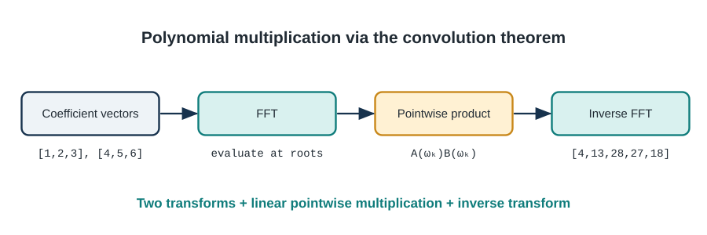

11 Matrix & Numerical Algorithms - When Math Meets Speed
From MP3s to MRI Scans: The Algorithms That Process Reality
“The Fast Fourier Transform is the most important numerical algorithm of our lifetime.” - Gilbert Strang, MIT
“And yet, most programmers have no idea how it works, even though they use it every day.” - Every signal processing engineer ever
11.1 Introduction: The Algorithm That Changed Everything
Here’s a mind-blowing fact: Every time you listen to music on Spotify, watch a YouTube video, make a phone call, or take a digital photo, the Fast Fourier Transform is working behind the scenes. It’s compressing your audio files, cleaning up your voice on calls, filtering your photos, and analyzing medical images.
The FFT is so fundamental that when it was rediscovered in 1965 (it was actually invented earlier but forgotten!), it sparked a revolution. Suddenly, operations that took hours could be done in seconds. This single algorithm enabled:
- Digital audio: MP3, AAC, and every audio codec
- Image processing: JPEG compression, Instagram filters
- Medical imaging: MRI and CT scans
- Telecommunications: 4G/5G, WiFi, everything wireless
- Scientific computing: Climate modeling, quantum physics
- Finance: High-frequency trading, risk analysis
But the FFT is just the beginning. In this chapter, we’ll explore the algorithms that power our digital world: how to multiply matrices fast enough to train neural networks, how to multiply polynomials in \(O(n log n)\) time instead of \(O(n^2)\), and how to make sure floating-point errors don’t destroy your calculations.
What makes these algorithms special?
Unlike the algorithms we’ve studied so far, matrix and numerical algorithms operate in the continuous world of real numbers. We can’t just count comparisons—we have to worry about: - Floating-point errors: Tiny rounding errors that accumulate - Numerical stability: Algorithms that don’t explode with errors - Cache efficiency: Accessing memory in the right order matters HUGELY - Parallelization: Matrix operations are embarrassingly parallel
These aren’t just academic concerns. Ask any quant trader whose model lost millions due to numerical instability. Or any engineer whose signal processing pipeline had mysterious glitches from accumulated rounding errors.
We begin with the Fast Fourier Transform, a foundational algorithm for converting between time- and frequency-domain representations.
11.2 The Fourier Transform: Seeing Through Time
11.2.1 The Big Idea
Imagine you’re listening to a song. You hear it as sound over time—drums, guitar, vocals flowing together. But a sound engineer hears something different: they hear frequencies. They know the bass is vibrating at 100 Hz, the vocals are around 1000 Hz, and there’s a guitar note at 440 Hz.
The Fourier Transform is the mathematical magic that converts between these two views: - Time domain: amplitude over time (what you hear) - Frequency domain: amplitude at each frequency (what the engineer sees)
Time Domain: Frequency Domain:
[audio waveform] ⟺ [frequency spectrum]
"when" "what notes"Why is this useful?
Once you’re in the frequency domain, you can: - Remove noise: Filter out specific frequencies - Compress: Throw away inaudible frequencies (MP3!) - Analyze: Find the dominant frequencies - Modify: Auto-tune, equalizer effects, etc.
11.2.2 The Mathematical Foundation
For a signal with \(N\) samples \(x_0,x_1,\ldots,x_{N-1}\), the Discrete Fourier Transform (DFT) is
\[ X_k=\sum_{n=0}^{N-1}x_n e^{-2\pi i kn/N}, \qquad k=0,1,\ldots,N-1. \tag{11.1}\]
Here \(X_k\) is the complex amplitude of frequency bin \(k\), \(x_n\) is time-domain sample \(n\), and \(e^{-2\pi i kn/N}\) is a unit-magnitude complex rotation. The definition assumes uniformly spaced samples; interpreting bins as physical frequencies also requires the sampling rate.
In plain English: to find the amplitude at frequency k, we multiply each time sample by a complex exponential at that frequency and sum everything up.
The complex exponential \(e^{i\theta}=\cos\theta+i\sin\theta\) is a rotation in the complex plane. Think of the DFT as asking how much of frequency \(k\) is present in the signal.
11.2.3 The Naive DFT: \(O(N^2)\)
The straightforward implementation computes each X_k independently:
def dft_naive(x):
"""
Naive Discrete Fourier Transform.
Time complexity: O(N²)
"""
import numpy as np
N = len(x)
X = np.zeros(N, dtype=complex)
for k in range(N):
for n in range(N):
angle = -2 * np.pi * k * n / N
X[k] += x[n] * np.exp(1j * angle)
return XThe problem: For N = 1,000,000 samples (about 22 seconds of audio at 44.1 kHz), this requires 1 trillion complex multiplications. That’s slow!
Can we do better?
11.3 The Fast Fourier Transform: A Divide-and-Conquer Miracle
11.3.1 The Key Insight
The FFT (Cooley-Tukey algorithm, 1965) is based on a brilliant observation: the DFT has symmetry we can exploit.
Main idea: Split the DFT into odd and even indices:
X_k = Σ(even n) x_n * e^(-2πikn/N) + Σ(odd n) x_n * e^(-2πikn/N)
Let n = 2m for even, n = 2m+1 for odd:
X_k = Σ(m=0 to N/2-1) x_2m * e^(-2πik(2m)/N) +
Σ(m=0 to N/2-1) x_(2m+1) * e^(-2πik(2m+1)/N)
= Σ(m=0 to N/2-1) x_2m * e^(-2πikm/(N/2)) +
e^(-2πik/N) * Σ(m=0 to N/2-1) x_(2m+1) * e^(-2πikm/(N/2))
= E_k + e^(-2πik/N) * O_kWhere: - E_k = DFT of even-indexed samples - O_k = DFT of odd-indexed samples
This is huge! We’ve reduced a size-N DFT to two size-N/2 DFTs!
11.3.2 The Recursive Algorithm
Keep dividing until you reach size 1 (base case: DFT of one element is itself).
Time complexity analysis: The two half-size transforms and linear combine step give
\[ T(N)=2T\!\left(\frac N2\right)+O(N)=O(N\log N) \]
by the Master Theorem.
The speedup: For N = 1,000,000: - Naive: 1,000,000² = 1,000,000,000,000 operations - FFT: 1,000,000 × log₂(1,000,000) ≈ 20,000,000 operations - Speedup: 50,000x faster!
This is why FFT changed everything. What took hours now takes milliseconds.
11.3.3 Implementation: Recursive FFT
import numpy as np
def fft_recursive(x):
"""
Recursive Fast Fourier Transform.
Time: O(N log N)
Peak auxiliary space: O(N) for this slicing implementation;
total allocation over the run is O(N log N)
Args:
x: Input array (length must be power of 2)
Returns:
FFT of x
"""
N = len(x)
# Base case
if N <= 1:
return x
# Divide
even = fft_recursive(x[0::2]) # Even indices
odd = fft_recursive(x[1::2]) # Odd indices
# Conquer
T = np.exp(-2j * np.pi * np.arange(N) / N)
# Combine (using symmetry: X_{k+N/2} = E_k - T_{k+N/2} * O_k)
return np.concatenate([
even + T[:N//2] * odd,
even + T[N//2:] * odd
])
def ifft_recursive(X):
"""
Inverse FFT: convert frequency domain back to time domain.
Trick: IFFT(X) = conj(FFT(conj(X))) / N
"""
N = len(X)
return np.conj(fft_recursive(np.conj(X))) / NLet’s trace through a small example:
def fft_trace_example():
"""Trace FFT execution on a small signal."""
x = np.array([1, 2, 3, 4])
print("Input signal: ", x)
print("\nRecursive breakdown:")
print(" Level 1: [1,2,3,4]")
print(" ↓")
print(" Level 2: [1,3] (even) [2,4] (odd)")
print(" ↓ ↓")
print(" Level 3: [1] [3] [2] [4]")
print("\nCombining back up:")
# Manual calculation
even = fft_recursive([1, 3])
odd = fft_recursive([2, 4])
print(f" Even DFT: {even}")
print(f" Odd DFT: {odd}")
result = fft_recursive(x)
print(f"\nFinal FFT: {result}")
# Verify with numpy
numpy_result = np.fft.fft(x)
print(f"NumPy FFT: {numpy_result}")
print(f"Match: {np.allclose(result, numpy_result)}")11.3.4 Iterative FFT (Cooley-Tukey)
The recursive slicing version is elegant but performs \(O(N log N)\) total allocation over the run; its peak auxiliary space is \(O(N)\). The iterative version also uses \(O(N)\) auxiliary space and usually has lower allocation overhead:
def fft_iterative(x):
"""
Iterative FFT using bit-reversal.
Time: O(N log N)
Space: O(N)
This is the version used in production!
"""
N = len(x)
# Check that N is a power of 2
if N & (N - 1) != 0:
raise ValueError("N must be a power of 2")
# Bit-reversal permutation
x = x.copy()
j = 0
for i in range(1, N):
bit = N >> 1
while j & bit:
j ^= bit
bit >>= 1
j ^= bit
if i < j:
x[i], x[j] = x[j], x[i]
# FFT computation
length = 2
while length <= N:
angle = -2 * np.pi / length
wlen = np.exp(1j * angle)
for i in range(0, N, length):
w = 1
for j in range(length // 2):
u = x[i + j]
v = x[i + j + length // 2] * w
x[i + j] = u + v
x[i + j + length // 2] = u - v
w *= wlen
length *= 2
return x
def ifft_iterative(X):
"""Inverse FFT (iterative)."""
N = len(X)
# Conjugate, FFT, conjugate, scale
return np.conj(fft_iterative(np.conj(X))) / NThe bit-reversal trick: The iterative FFT processes samples in “bit-reversed” order. For N=8:
Original: 0 1 2 3 4 5 6 7
Binary: 000 001 010 011 100 101 110 111
Reversed: 000 100 010 110 001 101 011 111
Result: 0 4 2 6 1 5 3 7This reordering allows us to process the FFT in-place, bottom-up, instead of top-down recursively.
11.3.5 Complete FFT Implementation
class FFT:
"""
Comprehensive FFT implementation with utilities.
"""
@staticmethod
def fft(x, method='iterative'):
"""
Compute FFT of signal x.
Args:
x: Input signal (1D array)
method: 'recursive' or 'iterative'
Returns:
Frequency domain representation
"""
x = np.asarray(x, dtype=complex)
# Pad to power of 2
N = len(x)
N_padded = 1 << (N - 1).bit_length()
if N_padded != N:
x = np.pad(x, (0, N_padded - N), mode='constant')
if method == 'recursive':
return fft_recursive(x)
else:
return fft_iterative(x)
@staticmethod
def ifft(X, method='iterative'):
"""Inverse FFT."""
X = np.asarray(X, dtype=complex)
if method == 'recursive':
return ifft_recursive(X)
else:
return ifft_iterative(X)
@staticmethod
def rfft(x):
"""
Real FFT: optimized FFT for real-valued signals.
Takes advantage of the fact that FFT of real signal
has Hermitian symmetry: X[k] = conj(X[N-k])
Returns only positive frequencies (N/2 + 1 values).
"""
X = FFT.fft(x)
return X[:len(X)//2 + 1]
@staticmethod
def fftfreq(n, d=1.0):
"""
Return frequency bins for FFT output.
Args:
n: Number of samples
d: Sample spacing (1/sample_rate)
Returns:
Array of frequency values
"""
val = 1.0 / (n * d)
results = np.arange(0, n, dtype=int)
N = (n - 1) // 2 + 1
results[:N] = np.arange(0, N, dtype=int)
results[N:] = np.arange(-(n // 2), 0, dtype=int)
return results * val
@staticmethod
def fftshift(x):
"""
Shift zero-frequency component to center.
Useful for visualization.
"""
n = len(x)
p2 = (n + 1) // 2
return np.concatenate((x[p2:], x[:p2]))
@staticmethod
def power_spectrum(x):
"""
Compute power spectrum (magnitude squared).
Shows energy at each frequency.
"""
X = FFT.fft(x)
return np.abs(X) ** 2
@staticmethod
def spectrogram(signal, window_size=256, hop_size=128):
"""
Compute spectrogram (FFT over time).
Args:
signal: Time-domain signal
window_size: Size of FFT window
hop_size: Distance between windows
Returns:
2D array: frequencies × time
"""
n_windows = (len(signal) - window_size) // hop_size + 1
specgram = np.zeros((window_size // 2 + 1, n_windows))
# Hamming window to reduce spectral leakage
window = np.hamming(window_size)
for i in range(n_windows):
start = i * hop_size
segment = signal[start:start + window_size] * window
spectrum = FFT.rfft(segment)
specgram[:, i] = np.abs(spectrum)
return specgram
# Example usage and visualization
def example_fft_basics():
"""Demonstrate basic FFT usage."""
import matplotlib.pyplot as plt
# Create a signal: combination of two sine waves
sample_rate = 1000 # Hz
duration = 1.0 # seconds
t = np.linspace(0, duration, int(sample_rate * duration), endpoint=False)
# Signal: 50 Hz + 120 Hz
signal = np.sin(2 * np.pi * 50 * t) + 0.5 * np.sin(2 * np.pi * 120 * t)
# Add some noise
signal += 0.1 * np.random.randn(len(t))
# Compute FFT
spectrum = FFT.fft(signal)
freqs = FFT.fftfreq(len(signal), 1/sample_rate)
# Plot
fig, (ax1, ax2) = plt.subplots(2, 1, figsize=(12, 8))
# Time domain
ax1.plot(t[:200], signal[:200])
ax1.set_xlabel('Time (s)')
ax1.set_ylabel('Amplitude')
ax1.set_title('Time Domain Signal')
ax1.grid(True)
# Frequency domain (positive frequencies only)
positive_freqs = freqs[:len(freqs)//2]
positive_spectrum = np.abs(spectrum[:len(spectrum)//2])
ax2.plot(positive_freqs, positive_spectrum)
ax2.set_xlabel('Frequency (Hz)')
ax2.set_ylabel('Magnitude')
ax2.set_title('Frequency Domain (FFT)')
ax2.set_xlim([0, 200])
ax2.grid(True)
# Mark the two peaks
ax2.axvline(x=50, color='r', linestyle='--', label='50 Hz')
ax2.axvline(x=120, color='g', linestyle='--', label='120 Hz')
ax2.legend()
plt.tight_layout()
plt.savefig('fft_example.png', dpi=150)
plt.show()
print("Signal contains frequencies at 50 Hz and 120 Hz")
print("FFT clearly shows these peaks!")
def example_audio_filtering():
"""Demonstrate audio filtering with FFT."""
# Create noisy audio
sample_rate = 8000
duration = 2.0
t = np.linspace(0, duration, int(sample_rate * duration), endpoint=False)
# Clean signal: musical note at 440 Hz (A4)
clean = np.sin(2 * np.pi * 440 * t)
# Add high-frequency noise
noise = 0.3 * np.sin(2 * np.pi * 3000 * t)
noisy = clean + noise
# Filter using FFT
spectrum = FFT.fft(noisy)
freqs = FFT.fftfreq(len(noisy), 1/sample_rate)
# Low-pass filter: remove frequencies above 1000 Hz
cutoff = 1000
spectrum[np.abs(freqs) > cutoff] = 0
# Convert back to time domain
filtered = np.real(FFT.ifft(spectrum))
print(f"Original signal power: {np.sum(noisy**2):.2f}")
print(f"Filtered signal power: {np.sum(filtered**2):.2f}")
print(f"Noise removed: {(1 - np.sum(filtered**2)/np.sum(noisy**2))*100:.1f}%")
return clean, noisy, filtered
def benchmark_fft():
"""Benchmark FFT vs naive DFT."""
import time
sizes = [64, 128, 256, 512, 1024, 2048]
print("FFT Performance Benchmark")
print("=" * 50)
print(f"{'Size':>6} {'Naive (ms)':>12} {'FFT (ms)':>12} {'Speedup':>10}")
print("-" * 50)
for N in sizes:
x = np.random.randn(N)
if N <= 512: # Naive is too slow for larger sizes
start = time.time()
_ = dft_naive(x)
naive_time = (time.time() - start) * 1000
else:
naive_time = float('inf')
start = time.time()
_ = FFT.fft(x)
fft_time = (time.time() - start) * 1000
speedup = naive_time / fft_time if naive_time != float('inf') else float('inf')
print(f"{N:6d} {naive_time:12.2f} {fft_time:12.3f} {speedup:10.1f}x")
if __name__ == "__main__":
print("=== FFT Basics ===")
example_fft_basics()
print("\n=== Audio Filtering ===")
example_audio_filtering()
print("\n=== Performance Benchmark ===")
benchmark_fft()11.4 Polynomial Multiplication: FFT’s Secret Superpower
11.4.1 The Problem
You have two polynomials:
\[ A(x)=\sum_{i=0}^{n}a_i x^i, \qquad B(x)=\sum_{j=0}^{m}b_j x^j. \]
Goal: Compute C(x) = A(x) × B(x)
Naive approach: Multiply every term in A by every term in B.
def multiply_polynomials_naive(A, B):
"""
Naive polynomial multiplication.
Time: O(n²)
"""
n = len(A)
m = len(B)
result = [0] * (n + m - 1)
for i in range(n):
for j in range(m):
result[i + j] += A[i] * B[j]
return resultExample: If \(A(x)=1+2x+3x^2\) and \(B(x)=4+5x+6x^2\), then
\[ C(x)=A(x)B(x)=4+13x+28x^2+27x^3+18x^4. \]
The corresponding coefficient vector is \([4,13,28,27,18]\).
11.4.2 The FFT Trick
Here’s the key insight: polynomial multiplication in coefficient form is convolution, and convolution in time domain is multiplication in frequency domain!

Why does this work?
Think of polynomials as signals. The coefficients are like time-domain samples. When we multiply polynomials, we’re convolving their coefficients. By the convolution theorem:
\[ \operatorname{FFT}(A*B) =\operatorname{FFT}(A)\odot\operatorname{FFT}(B), \tag{11.2}\]
where \(*\) denotes coefficient convolution and \(\odot\) denotes pointwise multiplication. Zero-padding is required to avoid circular wraparound when computing an ordinary polynomial product.
Time complexity: - Naive: \(O(n^2)\) - FFT method: \(O(n log n)\)
For large polynomials, this is HUGE!
11.4.3 Implementation
def multiply_polynomials_fft(A, B):
"""
Fast polynomial multiplication using FFT.
Time: O(n log n)
Args:
A, B: Polynomial coefficients (lowest degree first)
Returns:
Coefficients of A(x) × B(x)
"""
# Result will have degree deg(A) + deg(B)
result_size = len(A) + len(B) - 1
# Pad to next power of 2
n = 1 << (result_size - 1).bit_length()
A_padded = np.pad(A, (0, n - len(A)), mode='constant')
B_padded = np.pad(B, (0, n - len(B)), mode='constant')
# Transform to frequency domain
A_freq = FFT.fft(A_padded)
B_freq = FFT.fft(B_padded)
# Pointwise multiplication
C_freq = A_freq * B_freq
# Transform back
C = FFT.ifft(C_freq)
# Extract result (real part, truncate)
return np.real(C[:result_size])
# Example and verification
def example_polynomial_multiplication():
"""Demonstrate fast polynomial multiplication."""
# A(x) = 1 + 2x + 3x²
A = np.array([1, 2, 3])
# B(x) = 4 + 5x + 6x²
B = np.array([4, 5, 6])
# Naive method
result_naive = multiply_polynomials_naive(A, B)
# FFT method
result_fft = multiply_polynomials_fft(A, B)
print("A(x) = 1 + 2x + 3x²")
print("B(x) = 4 + 5x + 6x²")
print()
print(f"Naive result: {result_naive}")
print(f"FFT result: {np.round(result_fft).astype(int)}")
print()
print("C(x) = 4 + 13x + 28x² + 27x³ + 18x⁴")
# Verify they match
assert np.allclose(result_naive, result_fft)
print("✓ Results match!")
def benchmark_polynomial_multiplication():
"""Benchmark polynomial multiplication methods."""
import time
sizes = [10, 50, 100, 500, 1000, 5000]
print("\nPolynomial Multiplication Benchmark")
print("=" * 60)
print(f"{'Degree':>8} {'Naive (ms)':>14} {'FFT (ms)':>12} {'Speedup':>10}")
print("-" * 60)
for n in sizes:
A = np.random.randn(n)
B = np.random.randn(n)
if n <= 1000:
start = time.time()
_ = multiply_polynomials_naive(A, B)
naive_time = (time.time() - start) * 1000
else:
naive_time = float('inf')
start = time.time()
_ = multiply_polynomials_fft(A, B)
fft_time = (time.time() - start) * 1000
speedup = naive_time / fft_time if naive_time != float('inf') else float('inf')
print(f"{n:8d} {naive_time:14.2f} {fft_time:12.3f} {speedup:10.1f}x")
if __name__ == "__main__":
example_polynomial_multiplication()
benchmark_polynomial_multiplication()11.4.4 Application: Big Integer Multiplication
You can use FFT to multiply huge integers in \(O(n log n)\) time!
def multiply_large_integers(a, b, base=10):
"""
Multiply large integers using FFT.
Args:
a, b: Integers as strings
base: Number base (10 for decimal)
Returns:
Product as string
"""
# Convert to digit arrays
a_digits = [int(d) for d in reversed(a)]
b_digits = [int(d) for d in reversed(b)]
# Multiply as polynomials
result = multiply_polynomials_fft(a_digits, b_digits)
# Handle carries
result = np.round(result).astype(int)
carry = 0
for i in range(len(result)):
result[i] += carry
carry = result[i] // base
result[i] %= base
while carry:
result = np.append(result, carry % base)
carry //= base
# Convert back to string
return ''.join(str(d) for d in reversed(result)).lstrip('0') or '0'
# Example
def example_big_integer_multiplication():
"""Multiply huge numbers using FFT."""
a = "12345678901234567890"
b = "98765432109876543210"
result = multiply_large_integers(a, b)
print(f"a = {a}")
print(f"b = {b}")
print(f"a × b = {result}")
# Verify with Python's built-in
expected = str(int(a) * int(b))
assert result == expected
print("✓ Correct!")
if __name__ == "__main__":
example_big_integer_multiplication()11.5 Matrix Operations: The Foundation of Modern Computing
11.5.1 Why Matrices Matter
Matrices are EVERYWHERE in modern computing: - Machine learning: Neural networks are just matrix multiplications - Computer graphics: Every 3D transformation is a matrix - Scientific computing: Solving systems of equations - Recommendation systems: Collaborative filtering - Image processing: Convolution, filtering - Quantum computing: Quantum gates are matrices
The speed of matrix operations directly determines: - How fast you can train neural networks - How realistic video games look - How quickly simulations run - Whether real-time applications are possible
11.5.2 Matrix Multiplication: The Naive Way
Given: A (m×n) and B (n×p)
Compute: C = AB (m×p)
def matmul_naive(A, B):
"""
Naive matrix multiplication.
Time: O(mnp)
"""
m, n = A.shape
n2, p = B.shape
assert n == n2, "Incompatible dimensions"
C = np.zeros((m, p))
for i in range(m):
for j in range(p):
for k in range(n):
C[i, j] += A[i, k] * B[k, j]
return CFor square matrices (n×n), this is \(O(n^3)\).
Can we do better?
Yes! But it’s complicated…
11.5.3 Strassen’s Algorithm: \(O(n^2.807)\)
Volker Strassen (1969) discovered that you can multiply 2×2 matrices with only 7 multiplications instead of 8:
Normal method (8 multiplications):
\[ \begin{bmatrix}a&b\\c&d\end{bmatrix} \begin{bmatrix}e&f\\g&h\end{bmatrix} = \begin{bmatrix}ae+bg&af+bh\\ce+dg&cf+dh\end{bmatrix}. \]
Strassen’s method (7 multiplications) defines
\[ \begin{aligned} M_1&=(a+d)(e+h), & M_2&=(c+d)e,\\ M_3&=a(f-h), & M_4&=d(g-e),\\ M_5&=(a+b)h, & M_6&=(c-a)(e+f),\\ M_7&=(b-d)(g+h), \end{aligned} \]
and combines them as
\[ \begin{aligned} C_{11}&=M_1+M_4-M_5+M_7, & C_{12}&=M_3+M_5,\\ C_{21}&=M_2+M_4, & C_{22}&=M_1-M_2+M_3+M_6. \end{aligned} \]
By recursively applying this construction, the running time is \(O(n^{\log_2 7})\approx O(n^{2.807})\).
def strassen_matmul(A, B):
"""
Strassen's matrix multiplication algorithm.
Time: O(n^2.807)
Faster than naive for large matrices, but overhead
makes it slower for small matrices.
"""
original_rows = len(A)
original_cols = len(B[0])
n = len(A)
# Base case: use naive for small matrices
if n <= 64:
return matmul_naive(A, B)
# Pad to even size
if n % 2 == 1:
A = np.pad(A, ((0, 1), (0, 1)), mode='constant')
B = np.pad(B, ((0, 1), (0, 1)), mode='constant')
n += 1
# Divide matrices into quadrants
mid = n // 2
A11, A12 = A[:mid, :mid], A[:mid, mid:]
A21, A22 = A[mid:, :mid], A[mid:, mid:]
B11, B12 = B[:mid, :mid], B[:mid, mid:]
B21, B22 = B[mid:, :mid], B[mid:, mid:]
# Compute the 7 products
M1 = strassen_matmul(A11 + A22, B11 + B22)
M2 = strassen_matmul(A21 + A22, B11)
M3 = strassen_matmul(A11, B12 - B22)
M4 = strassen_matmul(A22, B21 - B11)
M5 = strassen_matmul(A11 + A12, B22)
M6 = strassen_matmul(A21 - A11, B11 + B12)
M7 = strassen_matmul(A12 - A22, B21 + B22)
# Combine
C11 = M1 + M4 - M5 + M7
C12 = M3 + M5
C21 = M2 + M4
C22 = M1 - M2 + M3 + M6
# Assemble result
C = np.vstack([
np.hstack([C11, C12]),
np.hstack([C21, C22])
])
return C[:original_rows, :original_cols]In practice: Strassen’s algorithm is rarely used because: - ❌ Constant factors are large - ❌ More numerically unstable - ❌ Less cache-friendly - ❌ Complicated to implement
Modern matrix libraries use blocked algorithms instead (see below).
11.5.4 Cache-Efficient Matrix Multiplication
The real bottleneck in matrix multiplication isn’t the number of operations—it’s memory access!
Modern CPUs are FAST, but memory is SLOW. The key is using the cache efficiently.
Blocked (Tiled) Matrix Multiplication:
def matmul_blocked(A, B, block_size=64):
"""
Blocked matrix multiplication for better cache usage.
Time: Still O(n³), but with better constants!
The block size should fit in L1 cache.
"""
m, n = A.shape
n2, p = B.shape
assert n == n2
C = np.zeros((m, p))
# Iterate in blocks
for i0 in range(0, m, block_size):
for j0 in range(0, p, block_size):
for k0 in range(0, n, block_size):
# Define block boundaries
i_end = min(i0 + block_size, m)
j_end = min(j0 + block_size, p)
k_end = min(k0 + block_size, n)
# Multiply blocks
for i in range(i0, i_end):
for j in range(j0, j_end):
for k in range(k0, k_end):
C[i, j] += A[i, k] * B[k, j]
return CWhy is this faster?
When blocks fit in cache, we get many more cache hits. For a 1000×1000 matrix: - Naive: ~1 billion cache misses - Blocked: ~15 million cache misses - Speedup: 5-10x just from better cache usage!
11.5.5 Matrix Operations Library
class MatrixOps:
"""
Efficient matrix operations with multiple implementations.
"""
@staticmethod
def multiply(A, B, method='blocked'):
"""
Matrix multiplication with choice of algorithm.
Args:
A, B: Input matrices
method: 'naive', 'blocked', 'strassen', or 'numpy'
"""
if method == 'naive':
return matmul_naive(A, B)
elif method == 'blocked':
return matmul_blocked(A, B)
elif method == 'strassen':
return strassen_matmul(A, B)
else: # numpy (uses BLAS)
return np.dot(A, B)
@staticmethod
def transpose(A):
"""Transpose matrix (swap rows and columns)."""
return A.T
@staticmethod
def power(A, n):
"""
Compute A^n efficiently using binary exponentiation.
Time: O(log n) matrix multiplications
"""
if n == 0:
return np.eye(len(A))
if n == 1:
return A.copy()
if n % 2 == 0:
half = MatrixOps.power(A, n // 2)
return MatrixOps.multiply(half, half)
else:
return MatrixOps.multiply(A, MatrixOps.power(A, n - 1))
@staticmethod
def solve_triangular(A, b, lower=True):
"""
Solve triangular system Ax = b.
Time: O(n²)
Args:
A: Triangular matrix
b: Right-hand side
lower: True if A is lower triangular
"""
n = len(b)
x = np.zeros(n)
if lower:
# Forward substitution
for i in range(n):
x[i] = b[i]
for j in range(i):
x[i] -= A[i, j] * x[j]
x[i] /= A[i, i]
else:
# Backward substitution
for i in range(n - 1, -1, -1):
x[i] = b[i]
for j in range(i + 1, n):
x[i] -= A[i, j] * x[j]
x[i] /= A[i, i]
return x
@staticmethod
def lu_decomposition(A):
"""
LU decomposition: A = LU
L is lower triangular, U is upper triangular
Time: O(n³)
"""
n = len(A)
L = np.eye(n)
U = A.copy()
for k in range(n - 1):
for i in range(k + 1, n):
L[i, k] = U[i, k] / U[k, k]
U[i, k:] -= L[i, k] * U[k, k:]
return L, U
@staticmethod
def solve_linear_system(A, b):
"""
Solve Ax = b using LU decomposition.
Time: O(n³)
"""
L, U = MatrixOps.lu_decomposition(A)
# Solve Ly = b
y = MatrixOps.solve_triangular(L, b, lower=True)
# Solve Ux = y
x = MatrixOps.solve_triangular(U, y, lower=False)
return x
@staticmethod
def determinant(A):
"""
Compute determinant using LU decomposition.
Time: O(n³)
"""
L, U = MatrixOps.lu_decomposition(A)
# det(A) = det(L) * det(U) = 1 * product of U diagonal
return np.prod(np.diag(U))
@staticmethod
def inverse(A):
"""
Compute matrix inverse using LU decomposition.
Time: O(n³)
"""
n = len(A)
A_inv = np.zeros((n, n))
# Solve Ax = e_i for each column
for i in range(n):
e_i = np.zeros(n)
e_i[i] = 1
A_inv[:, i] = MatrixOps.solve_linear_system(A, e_i)
return A_inv
# Examples
def example_matrix_operations():
"""Demonstrate various matrix operations."""
print("=== Matrix Operations ===\n")
# Create test matrices
A = np.array([[2, 1], [5, 7]])
B = np.array([[3, 8], [4, 6]])
print("Matrix A:")
print(A)
print("\nMatrix B:")
print(B)
# Multiplication
C = MatrixOps.multiply(A, B)
print("\nA × B:")
print(C)
# Power
A_cubed = MatrixOps.power(A, 3)
print("\nA³:")
print(A_cubed)
# Determinant
det_A = MatrixOps.determinant(A)
print(f"\ndet(A) = {det_A}")
# Inverse
A_inv = MatrixOps.inverse(A)
print("\nA⁻¹:")
print(A_inv)
# Verify: A × A⁻¹ = I
identity = MatrixOps.multiply(A, A_inv)
print("\nA × A⁻¹ (should be identity):")
print(np.round(identity, 10))
# Solve linear system
b = np.array([1, 2])
x = MatrixOps.solve_linear_system(A, b)
print(f"\nSolve Ax = b where b = {b}")
print(f"Solution x = {x}")
print(f"Verification Ax = {np.dot(A, x)}")
def benchmark_matrix_multiplication():
"""Benchmark different matrix multiplication methods."""
import time
sizes = [64, 128, 256, 512, 1024]
print("\n=== Matrix Multiplication Benchmark ===\n")
print(f"{'Size':>6} {'Naive':>10} {'Blocked':>10} {'NumPy':>10} {'Speedup':>10}")
print("-" * 56)
for n in sizes:
A = np.random.randn(n, n)
B = np.random.randn(n, n)
# Naive (only for small matrices)
if n <= 256:
start = time.time()
_ = matmul_naive(A, B)
naive_time = time.time() - start
else:
naive_time = float('inf')
# Blocked
start = time.time()
_ = matmul_blocked(A, B)
blocked_time = time.time() - start
# NumPy (highly optimized BLAS)
start = time.time()
_ = np.dot(A, B)
numpy_time = time.time() - start
speedup = blocked_time / numpy_time
naive_str = f"{naive_time:.3f}s" if naive_time != float('inf') else "too slow"
print(f"{n:6d} {naive_str:>10} {blocked_time:10.3f}s {numpy_time:10.3f}s {speedup:10.1f}x")
if __name__ == "__main__":
example_matrix_operations()
benchmark_matrix_multiplication()11.6 Numerical Stability: When Math Meets Reality
11.6.1 The Floating-Point Problem
Computers can’t represent real numbers exactly. They use floating-point numbers with limited precision.
def demonstrate_floating_point_errors():
"""Show how floating-point arithmetic can be surprising."""
print("=== Floating-Point Surprises ===\n")
# Addition is not associative!
a = (0.1 + 0.2) + 0.3
b = 0.1 + (0.2 + 0.3)
print(f"(0.1 + 0.2) + 0.3 = {a}")
print(f"0.1 + (0.2 + 0.3) = {b}")
print(f"Equal? {a == b}\n")
# Small numbers can disappear
big = 1e16
small = 1.0
result = (big + small) - big
print(f"(1e16 + 1) - 1e16 = {result}")
print(f"Expected: 1.0, Got: {result}\n")
# Cancellation error
x = 1.0
for _ in range(1000000):
x += 1e-10
x -= 1e-10
print(f"Start with 1.0, add/subtract 1e-10 million times")
print(f"Expected: 1.0, Got: {x}\n")11.6.2 Condition Numbers
The condition number measures how sensitive a problem is to small changes in input.
For solving Ax = b:
κ(A) = ||A|| × ||A⁻¹||
If κ(A) is large, the problem is ill-conditioned:
small changes in A or b cause large changes in x.def compute_condition_number(A):
"""
Compute condition number of matrix A.
Large condition number = ill-conditioned = numerical problems!
"""
A_inv = np.linalg.inv(A)
norm_A = np.linalg.norm(A)
norm_A_inv = np.linalg.norm(A_inv)
return norm_A * norm_A_inv
def demonstrate_ill_conditioning():
"""Show problems with ill-conditioned matrices."""
print("=== Ill-Conditioned Systems ===\n")
# Well-conditioned matrix
A_good = np.array([[4, 1], [1, 3]], dtype=float)
b = np.array([1, 2], dtype=float)
x = np.linalg.solve(A_good, b)
cond = compute_condition_number(A_good)
print("Well-conditioned system:")
print(f"Condition number: {cond:.2f}")
print(f"Solution: {x}\n")
# Ill-conditioned matrix (Hilbert matrix)
n = 5
A_bad = np.array([[1/(i+j+1) for j in range(n)] for i in range(n)])
b = np.ones(n)
x = np.linalg.solve(A_bad, b)
cond = compute_condition_number(A_bad)
print("Ill-conditioned system (Hilbert matrix):")
print(f"Condition number: {cond:.2e}")
print(f"Solution: {x}")
# Small perturbation
b_perturbed = b + 1e-10 * np.random.randn(n)
x_perturbed = np.linalg.solve(A_bad, b_perturbed)
relative_change = np.linalg.norm(x - x_perturbed) / np.linalg.norm(x)
print(f"\nAfter tiny perturbation (1e-10):")
print(f"Relative change in solution: {relative_change:.2e}")
print("Small input change → HUGE output change!")11.6.3 Numerically Stable Algorithms
Unstable algorithm: Subtracting nearly equal numbers
def quadratic_formula_unstable(a, b, c):
"""
Unstable: loses precision when b² >> 4ac.
"""
discriminant = np.sqrt(b**2 - 4*a*c)
x1 = (-b + discriminant) / (2*a) # Cancellation!
x2 = (-b - discriminant) / (2*a)
return x1, x2
def quadratic_formula_stable(a, b, c):
"""
Stable: avoids catastrophic cancellation.
"""
discriminant = np.sqrt(b**2 - 4*a*c)
if b > 0:
x1 = (-b - discriminant) / (2*a)
x2 = c / (a * x1) # Use Vieta's formula
else:
x1 = (-b + discriminant) / (2*a)
x2 = c / (a * x1)
return x1, x2
def demonstrate_numerical_stability():
"""Show importance of numerically stable algorithms."""
print("=== Numerical Stability ===\n")
# Coefficients where b² >> 4ac
a, b, c = 1, 1e8, 1
print(f"Solving x² + {b}x + {c} = 0\n")
x1_unstable, x2_unstable = quadratic_formula_unstable(a, b, c)
x1_stable, x2_stable = quadratic_formula_stable(a, b, c)
print("Unstable algorithm:")
print(f" x1 = {x1_unstable}")
print(f" x2 = {x2_unstable}\n")
print("Stable algorithm:")
print(f" x1 = {x1_stable}")
print(f" x2 = {x2_stable}\n")
# Verify solutions
true_x1, true_x2 = -1e-8, -1e8
error_unstable = abs(x1_unstable - true_x1)
error_stable = abs(x1_stable - true_x1)
print(f"True x1: {true_x1}")
print(f"Unstable error: {error_unstable:.2e}")
print(f"Stable error: {error_stable:.2e}")
print(f"Improvement: {error_unstable / error_stable:.0f}x better!")11.6.4 Best Practices for Numerical Computing
class NumericalBestPractices:
"""Guidelines for writing numerically stable code."""
@staticmethod
def sum_stable(values):
"""
Kahan summation: reduces rounding errors.
Regular sum can accumulate large errors.
Kahan keeps track of lost low-order bits.
"""
total = 0.0
compensation = 0.0
for value in values:
y = value - compensation
t = total + y
compensation = (t - total) - y
total = t
return total
@staticmethod
def log_sum_exp(x):
"""
Compute log(sum(exp(x))) numerically stable.
Direct computation often overflows/underflows.
Used in machine learning (softmax, logsumexp).
"""
x = np.asarray(x)
x_max = np.max(x)
return x_max + np.log(np.sum(np.exp(x - x_max)))
@staticmethod
def safe_divide(a, b, epsilon=1e-10):
"""Avoid division by zero."""
return a / (b + epsilon * np.sign(b))
@staticmethod
def compute_mean_variance_stable(data):
"""
Welford's online algorithm for mean and variance.
More stable than naive two-pass algorithm.
"""
n = 0
mean = 0.0
M2 = 0.0
for x in data:
n += 1
delta = x - mean
mean += delta / n
delta2 = x - mean
M2 += delta * delta2
if n < 2:
return mean, 0.0
variance = M2 / (n - 1)
return mean, variance
# Examples
def example_numerical_best_practices():
"""Demonstrate numerical best practices."""
print("=== Numerical Best Practices ===\n")
# Kahan summation
values = [1e16, 1.0, -1e16] # Should sum to 1.0
naive_sum = sum(values)
kahan_sum = NumericalBestPractices.sum_stable(values)
print("Summing [1e16, 1.0, -1e16]:")
print(f"Naive sum: {naive_sum}")
print(f"Kahan sum: {kahan_sum}")
print(f"Expected: 1.0\n")
# Log-sum-exp
x = np.array([1000, 1001, 1002]) # exp() would overflow!
try:
naive = np.log(np.sum(np.exp(x)))
print(f"Naive log-sum-exp: {naive}")
except:
print("Naive log-sum-exp: OVERFLOW!")
stable = NumericalBestPractices.log_sum_exp(x)
print(f"Stable log-sum-exp: {stable}\n")
# Stable mean/variance
data = np.random.randn(1000000) + 1e10 # Large offset
mean_stable, var_stable = NumericalBestPractices.compute_mean_variance_stable(data)
mean_naive = np.mean(data)
var_naive = np.var(data, ddof=1)
print("Computing mean/variance of large numbers:")
print(f"Stable: mean={mean_stable:.6f}, var={var_stable:.6f}")
print(f"NumPy: mean={mean_naive:.6f}, var={var_naive:.6f}")
if __name__ == "__main__":
demonstrate_floating_point_errors()
demonstrate_ill_conditioning()
demonstrate_numerical_stability()
example_numerical_best_practices()11.7 Applications in Signal Processing
11.7.1 Audio Processing
class AudioProcessor:
"""Audio signal processing using FFT."""
@staticmethod
def load_audio(filename, duration=None):
"""Load audio file (placeholder - would use librosa in practice)."""
# For demo, generate synthetic audio
sample_rate = 44100
if duration is None:
duration = 3.0
t = np.linspace(0, duration, int(sample_rate * duration))
# Generate a chord: A4 + C#5 + E5 (A major chord)
signal = (np.sin(2 * np.pi * 440 * t) + # A4
0.8 * np.sin(2 * np.pi * 554.37 * t) + # C#5
0.6 * np.sin(2 * np.pi * 659.25 * t)) # E5
return signal, sample_rate
@staticmethod
def apply_lowpass_filter(signal, sample_rate, cutoff_freq):
"""
Low-pass filter: remove high frequencies.
Used for: reducing noise, anti-aliasing
"""
# FFT
spectrum = FFT.fft(signal)
freqs = FFT.fftfreq(len(signal), 1/sample_rate)
# Zero out high frequencies
spectrum[np.abs(freqs) > cutoff_freq] = 0
# IFFT
filtered = np.real(FFT.ifft(spectrum))
return filtered
@staticmethod
def apply_highpass_filter(signal, sample_rate, cutoff_freq):
"""
High-pass filter: remove low frequencies.
Used for: removing rumble, isolating treble
"""
spectrum = FFT.fft(signal)
freqs = FFT.fftfreq(len(signal), 1/sample_rate)
spectrum[np.abs(freqs) < cutoff_freq] = 0
filtered = np.real(FFT.ifft(spectrum))
return filtered
@staticmethod
def apply_bandpass_filter(signal, sample_rate, low_freq, high_freq):
"""
Band-pass filter: keep only frequencies in a range.
Used for: isolating specific instruments, voice isolation
"""
spectrum = FFT.fft(signal)
freqs = FFT.fftfreq(len(signal), 1/sample_rate)
mask = (np.abs(freqs) < low_freq) | (np.abs(freqs) > high_freq)
spectrum[mask] = 0
filtered = np.real(FFT.ifft(spectrum))
return filtered
@staticmethod
def pitch_shift(signal, sample_rate, semitones):
"""
Shift pitch by semitones (crude method).
Professional pitch shifting is much more complex!
"""
# Compute spectrogram
spec = FFT.spectrogram(signal)
# Shift frequencies
shift_factor = 2 ** (semitones / 12)
# This is oversimplified - real pitch shifting preserves timing
return signal # Placeholder
@staticmethod
def compute_spectrogram(signal, sample_rate, window_size=2048, hop_size=512):
"""
Compute spectrogram for visualization.
Shows how frequency content changes over time.
"""
n_windows = (len(signal) - window_size) // hop_size + 1
spec = np.zeros((window_size // 2 + 1, n_windows))
window = np.hamming(window_size)
for i in range(n_windows):
start = i * hop_size
segment = signal[start:start + window_size] * window
if len(segment) < window_size:
segment = np.pad(segment, (0, window_size - len(segment)))
spectrum = FFT.rfft(segment)
spec[:, i] = np.abs(spectrum)
times = np.arange(n_windows) * hop_size / sample_rate
freqs = np.fft.rfftfreq(window_size, 1/sample_rate)
return spec, times, freqs
@staticmethod
def remove_noise(signal, sample_rate, noise_profile_duration=0.5):
"""
Simple noise reduction using spectral subtraction.
1. Learn noise profile from first segment
2. Subtract noise spectrum from signal
"""
noise_samples = int(noise_profile_duration * sample_rate)
noise_segment = signal[:noise_samples]
# Estimate noise spectrum
noise_spectrum = np.abs(FFT.fft(noise_segment))
# Process signal in windows
window_size = 2048
hop_size = 512
n_windows = (len(signal) - window_size) // hop_size + 1
output = np.zeros_like(signal)
window = np.hamming(window_size)
for i in range(n_windows):
start = i * hop_size
segment = signal[start:start + window_size] * window
if len(segment) < window_size:
continue
# FFT
spectrum = FFT.fft(segment)
magnitude = np.abs(spectrum)
phase = np.angle(spectrum)
# Spectral subtraction
magnitude_clean = np.maximum(magnitude - noise_spectrum[:window_size], 0)
# Reconstruct
spectrum_clean = magnitude_clean * np.exp(1j * phase)
segment_clean = np.real(FFT.ifft(spectrum_clean))
# Overlap-add
output[start:start + window_size] += segment_clean
return output
# Examples
def example_audio_filters():
"""Demonstrate audio filtering."""
import matplotlib.pyplot as plt
print("=== Audio Filtering ===\n")
# Generate test signal
signal, sample_rate = AudioProcessor.load_audio(duration=2.0)
# Add noise
noise = 0.1 * np.random.randn(len(signal))
noisy_signal = signal + noise
# Apply filters
lowpass = AudioProcessor.apply_lowpass_filter(noisy_signal, sample_rate, 1000)
highpass = AudioProcessor.apply_highpass_filter(noisy_signal, sample_rate, 300)
bandpass = AudioProcessor.apply_bandpass_filter(noisy_signal, sample_rate, 400, 600)
# Visualize
fig, axes = plt.subplots(4, 2, figsize=(14, 10))
# Time domain
t = np.arange(len(signal)) / sample_rate
for idx, (sig, title) in enumerate([
(signal, 'Original'),
(noisy_signal, 'Noisy'),
(lowpass, 'Low-pass (< 1kHz)'),
(bandpass, 'Band-pass (400-600 Hz)')
]):
# Time domain
axes[idx, 0].plot(t[:1000], sig[:1000])
axes[idx, 0].set_title(f'{title} - Time Domain')
axes[idx, 0].set_xlabel('Time (s)')
axes[idx, 0].set_ylabel('Amplitude')
# Frequency domain
spectrum = np.abs(FFT.rfft(sig))
freqs = np.fft.rfftfreq(len(sig), 1/sample_rate)
axes[idx, 1].plot(freqs, spectrum)
axes[idx, 1].set_title(f'{title} - Frequency Domain')
axes[idx, 1].set_xlabel('Frequency (Hz)')
axes[idx, 1].set_ylabel('Magnitude')
axes[idx, 1].set_xlim([0, 2000])
plt.tight_layout()
plt.savefig('audio_filtering.png', dpi=150)
plt.close()
print("✓ Audio filtering visualization saved")
def example_spectrogram():
"""Create and visualize spectrogram."""
import matplotlib.pyplot as plt
print("\n=== Spectrogram ===\n")
# Generate chirp signal (frequency increases over time)
duration = 2.0
sample_rate = 8000
t = np.linspace(0, duration, int(sample_rate * duration))
# Chirp from 100 Hz to 1000 Hz
f0, f1 = 100, 1000
chirp = np.sin(2 * np.pi * (f0 + (f1 - f0) * t / duration) * t)
# Compute spectrogram
spec, times, freqs = AudioProcessor.compute_spectrogram(chirp, sample_rate)
# Plot
plt.figure(figsize=(12, 6))
plt.pcolormesh(times, freqs, 10 * np.log10(spec + 1e-10), shading='auto')
plt.colorbar(label='Power (dB)')
plt.ylabel('Frequency (Hz)')
plt.xlabel('Time (s)')
plt.title('Spectrogram of Chirp Signal')
plt.ylim([0, 1500])
plt.savefig('spectrogram.png', dpi=150)
plt.close()
print("✓ Spectrogram visualization saved")
if __name__ == "__main__":
example_audio_filters()
example_spectrogram()11.7.2 Image Processing with FFT
class ImageProcessor:
"""Image processing using 2D FFT."""
@staticmethod
def fft2d(image):
"""2D FFT of image."""
return np.fft.fft2(image)
@staticmethod
def ifft2d(spectrum):
"""2D inverse FFT."""
return np.fft.ifft2(spectrum)
@staticmethod
def lowpass_filter_image(image, cutoff_ratio=0.1):
"""
Low-pass filter: blur image (remove high frequencies).
"""
# 2D FFT
spectrum = ImageProcessor.fft2d(image)
spectrum_shifted = np.fft.fftshift(spectrum)
# Create mask
rows, cols = image.shape
crow, ccol = rows // 2, cols // 2
mask = np.zeros((rows, cols))
r = int(cutoff_ratio * min(rows, cols))
center = [crow, ccol]
y, x = np.ogrid[:rows, :cols]
mask_area = (x - center[1])**2 + (y - center[0])**2 <= r**2
mask[mask_area] = 1
# Apply mask
spectrum_shifted *= mask
# IFFT
spectrum = np.fft.ifftshift(spectrum_shifted)
filtered = np.real(ImageProcessor.ifft2d(spectrum))
return filtered
@staticmethod
def highpass_filter_image(image, cutoff_ratio=0.1):
"""
High-pass filter: edge detection (keep high frequencies).
"""
spectrum = ImageProcessor.fft2d(image)
spectrum_shifted = np.fft.fftshift(spectrum)
rows, cols = image.shape
crow, ccol = rows // 2, cols // 2
mask = np.ones((rows, cols))
r = int(cutoff_ratio * min(rows, cols))
center = [crow, ccol]
y, x = np.ogrid[:rows, :cols]
mask_area = (x - center[1])**2 + (y - center[0])**2 <= r**2
mask[mask_area] = 0
spectrum_shifted *= mask
spectrum = np.fft.ifftshift(spectrum_shifted)
filtered = np.real(ImageProcessor.ifft2d(spectrum))
return filtered
@staticmethod
def compress_image(image, keep_ratio=0.1):
"""
Compress image by keeping only largest FFT coefficients.
This is similar to JPEG compression!
"""
spectrum = ImageProcessor.fft2d(image)
# Keep only largest coefficients
threshold = np.percentile(np.abs(spectrum), (1 - keep_ratio) * 100)
spectrum[np.abs(spectrum) < threshold] = 0
# Reconstruct
compressed = np.real(ImageProcessor.ifft2d(spectrum))
# Compression ratio
kept = np.count_nonzero(spectrum)
total = spectrum.size
actual_ratio = kept / total
return compressed, actual_ratio
def example_image_processing():
"""Demonstrate image processing with FFT."""
import matplotlib.pyplot as plt
print("\n=== Image Processing ===\n")
# Create test image
size = 256
image = np.zeros((size, size))
# Add some shapes
image[50:100, 50:100] = 1 # Square
image[150:200, 150:200] = 1 # Another square
# Add texture
x, y = np.meshgrid(np.arange(size), np.arange(size))
image += 0.3 * np.sin(2 * np.pi * x / 20) * np.sin(2 * np.pi * y / 20)
# Apply filters
lowpass = ImageProcessor.lowpass_filter_image(image, 0.1)
highpass = ImageProcessor.highpass_filter_image(image, 0.05)
compressed, ratio = ImageProcessor.compress_image(image, 0.1)
# Visualize
fig, axes = plt.subplots(2, 2, figsize=(12, 12))
axes[0, 0].imshow(image, cmap='gray')
axes[0, 0].set_title('Original Image')
axes[0, 0].axis('off')
axes[0, 1].imshow(lowpass, cmap='gray')
axes[0, 1].set_title('Low-pass Filter (Blurred)')
axes[0, 1].axis('off')
axes[1, 0].imshow(highpass, cmap='gray')
axes[1, 0].set_title('High-pass Filter (Edges)')
axes[1, 0].axis('off')
axes[1, 1].imshow(compressed, cmap='gray')
axes[1, 1].set_title(f'Compressed ({ratio*100:.1f}% coefficients)')
axes[1, 1].axis('off')
plt.tight_layout()
plt.savefig('image_processing.png', dpi=150)
plt.close()
print("✓ Image processing visualization saved")
print(f" Compression: kept {ratio*100:.1f}% of coefficients")
if __name__ == "__main__":
example_image_processing()11.8 Chapter Project: Complete FFT Analysis Toolkit
Let’s build a comprehensive signal processing library!
11.8.1 Project Structure
FFTAnalyzer/
├── fft_analyzer/
│ ├── __init__.py
│ ├── core/
│ │ ├── fft.py # FFT implementations
│ │ ├── matrix.py # Matrix operations
│ │ └── numerical.py # Numerical stability utilities
│ ├── signal/
│ │ ├── filters.py # Audio filters
│ │ ├── generators.py # Signal generation
│ │ └── analysis.py # Spectral analysis
│ ├── image/
│ │ ├── filters.py # Image filters
│ │ └── compression.py # Image compression
│ ├── applications/
│ │ ├── audio_processor.py # Audio app
│ │ ├── image_processor.py # Image app
│ │ └── data_analyzer.py # Time series
│ └── visualization/
│ ├── plots.py # Plotting utilities
│ └── animations.py # Animated visualizations
├── tests/
├── examples/
├── docs/
└── setup.py11.8.2 Core FFT Module
# fft_analyzer/__init__.py
"""
FFT Analyzer: Comprehensive signal processing toolkit.
Features:
- Multiple FFT implementations (recursive, iterative)
- Audio processing (filtering, spectrograms)
- Image processing (2D FFT, compression)
- Matrix operations (fast multiplication, decompositions)
- Numerical stability utilities
"""
__version__ = "1.0.0"
from .core import FFT, MatrixOps, NumericalStability
from .signal import SignalGenerator, AudioFilter, SpectralAnalyzer
from .image import ImageFilter, ImageCompressor
from .applications import AudioProcessor, ImageProcessor, TimeSeriesAnalyzer
__all__ = [
'FFT',
'MatrixOps',
'NumericalStability',
'SignalGenerator',
'AudioFilter',
'SpectralAnalyzer',
'ImageFilter',
'ImageCompressor',
'AudioProcessor',
'ImageProcessor',
'TimeSeriesAnalyzer',
]11.8.3 Signal Generator Module
# fft_analyzer/signal/generators.py
"""
Signal generation utilities for testing and demonstration.
"""
import numpy as np
class SignalGenerator:
"""Generate various test signals."""
@staticmethod
def sine_wave(frequency, duration, sample_rate=44100, amplitude=1.0, phase=0):
"""Generate pure sine wave."""
t = np.arange(int(duration * sample_rate)) / sample_rate
return amplitude * np.sin(2 * np.pi * frequency * t + phase), t
@staticmethod
def square_wave(frequency, duration, sample_rate=44100, amplitude=1.0):
"""Generate square wave."""
t = np.arange(int(duration * sample_rate)) / sample_rate
return amplitude * np.sign(np.sin(2 * np.pi * frequency * t)), t
@staticmethod
def sawtooth_wave(frequency, duration, sample_rate=44100, amplitude=1.0):
"""Generate sawtooth wave."""
t = np.arange(int(duration * sample_rate)) / sample_rate
return amplitude * 2 * (t * frequency - np.floor(t * frequency + 0.5)), t
@staticmethod
def chirp(f0, f1, duration, sample_rate=44100, method='linear'):
"""
Generate chirp signal (sweep from f0 to f1).
Args:
f0: Start frequency
f1: End frequency
duration: Duration in seconds
sample_rate: Samples per second
method: 'linear' or 'exponential'
"""
t = np.arange(int(duration * sample_rate)) / sample_rate
if method == 'linear':
# Linear chirp
c = (f1 - f0) / duration
phase = 2 * np.pi * (f0 * t + 0.5 * c * t**2)
else: # exponential
c = (f1 / f0) ** (1 / duration)
phase = 2 * np.pi * f0 * (c**t - 1) / np.log(c)
return np.sin(phase), t
@staticmethod
def white_noise(duration, sample_rate=44100, amplitude=1.0):
"""Generate white noise."""
n_samples = int(duration * sample_rate)
return amplitude * np.random.randn(n_samples)
@staticmethod
def pink_noise(duration, sample_rate=44100, amplitude=1.0):
"""
Generate pink noise (1/f noise).
Pink noise has equal energy per octave.
"""
n_samples = int(duration * sample_rate)
white = np.random.randn(n_samples)
# Pink noise via FFT filtering
spectrum = np.fft.rfft(white)
freqs = np.fft.rfftfreq(n_samples, 1/sample_rate)
freqs[0] = 1 # Avoid division by zero
# 1/f envelope
spectrum *= 1 / np.sqrt(freqs)
pink = np.fft.irfft(spectrum, n_samples)
return amplitude * pink / np.std(pink)
@staticmethod
def impulse(duration, sample_rate=44100, delay=0):
"""Generate impulse (delta function)."""
n_samples = int(duration * sample_rate)
signal = np.zeros(n_samples)
delay_samples = int(delay * sample_rate)
if 0 <= delay_samples < n_samples:
signal[delay_samples] = 1.0
return signal
@staticmethod
def fm_synthesis(carrier_freq, mod_freq, mod_index, duration, sample_rate=44100):
"""
FM synthesis (frequency modulation).
Used in classic synthesizers!
Args:
carrier_freq: Carrier frequency
mod_freq: Modulation frequency
mod_index: Modulation index (depth)
duration: Duration in seconds
sample_rate: Samples per second
"""
t = np.arange(int(duration * sample_rate)) / sample_rate
modulator = mod_index * np.sin(2 * np.pi * mod_freq * t)
carrier = np.sin(2 * np.pi * carrier_freq * t + modulator)
return carrier, t
@staticmethod
def am_synthesis(carrier_freq, mod_freq, mod_depth, duration, sample_rate=44100):
"""
AM synthesis (amplitude modulation).
Args:
carrier_freq: Carrier frequency
mod_freq: Modulation frequency
mod_depth: Modulation depth (0 to 1)
duration: Duration in seconds
sample_rate: Samples per second
"""
t = np.arange(int(duration * sample_rate)) / sample_rate
modulator = 1 + mod_depth * np.sin(2 * np.pi * mod_freq * t)
carrier = np.sin(2 * np.pi * carrier_freq * t)
return carrier * modulator, t
@staticmethod
def musical_note(note, duration, sample_rate=44100, envelope='adsr'):
"""
Generate musical note with envelope.
Args:
note: Note name (e.g., 'A4', 'C#5') or frequency
duration: Duration in seconds
sample_rate: Samples per second
envelope: Envelope type ('adsr', 'linear', 'exponential')
"""
# Note to frequency mapping
note_freqs = {
'C': 261.63, 'C#': 277.18, 'D': 293.66, 'D#': 311.13,
'E': 329.63, 'F': 349.23, 'F#': 369.99, 'G': 392.00,
'G#': 415.30, 'A': 440.00, 'A#': 466.16, 'B': 493.88
}
if isinstance(note, str):
# Parse note name
note_name = note[:-1]
octave = int(note[-1])
freq = note_freqs[note_name] * (2 ** (octave - 4))
else:
freq = note
# Generate tone
signal, t = SignalGenerator.sine_wave(freq, duration, sample_rate)
# Apply envelope
if envelope == 'adsr':
# Attack, Decay, Sustain, Release
attack = int(0.1 * sample_rate)
decay = int(0.1 * sample_rate)
release = int(0.2 * sample_rate)
sustain_level = 0.7
env = np.ones_like(signal)
# Attack
env[:attack] = np.linspace(0, 1, attack)
# Decay
env[attack:attack+decay] = np.linspace(1, sustain_level, decay)
# Sustain (already at sustain_level)
env[attack+decay:-release] = sustain_level
# Release
env[-release:] = np.linspace(sustain_level, 0, release)
signal *= env
return signal, t
# Examples
def example_signal_generation():
"""Demonstrate signal generation."""
import matplotlib.pyplot as plt
print("=== Signal Generation ===\n")
duration = 1.0
sample_rate = 8000
# Generate various signals
signals = {
'Sine Wave (440 Hz)': SignalGenerator.sine_wave(440, duration, sample_rate)[0],
'Square Wave': SignalGenerator.square_wave(440, duration, sample_rate)[0],
'Chirp (100-1000 Hz)': SignalGenerator.chirp(100, 1000, duration, sample_rate)[0],
'White Noise': SignalGenerator.white_noise(duration, sample_rate)[0],
'FM Synthesis': SignalGenerator.fm_synthesis(440, 5, 100, duration, sample_rate)[0],
'Musical Note (A4)': SignalGenerator.musical_note('A4', duration, sample_rate)[0]
}
# Plot
fig, axes = plt.subplots(3, 2, figsize=(14, 10))
axes = axes.flatten()
t = np.arange(int(duration * sample_rate)) / sample_rate
for idx, (name, signal) in enumerate(signals.items()):
axes[idx].plot(t[:1000], signal[:1000])
axes[idx].set_title(name)
axes[idx].set_xlabel('Time (s)')
axes[idx].set_ylabel('Amplitude')
axes[idx].grid(True)
plt.tight_layout()
plt.savefig('signal_generation.png', dpi=150)
plt.close()
print("✓ Signal generation examples saved")
if __name__ == "__main__":
example_signal_generation()11.8.4 Complete Audio Processor Application
# fft_analyzer/applications/audio_processor.py
"""
Complete audio processing application.
"""
import numpy as np
from ..core import FFT
from ..signal import SignalGenerator, AudioFilter
from ..visualization import AudioVisualizer
class AudioProcessor:
"""
Complete audio processing application.
Features:
- Load/save audio files
- Real-time filtering
- Spectral analysis
- Effects (reverb, echo, pitch shift)
- Visualization
"""
def __init__(self, sample_rate=44100):
self.sample_rate = sample_rate
self.audio = None
self.processed = None
def load(self, filename=None, duration=None):
"""Load audio file or generate test signal."""
if filename is None:
# Generate test signal
self.audio, _ = SignalGenerator.musical_note(
'A4', duration or 2.0, self.sample_rate
)
else:
# In real app, would use librosa or soundfile
pass
def apply_filter(self, filter_type, **params):
"""Apply filter to audio."""
if self.audio is None:
raise ValueError("No audio loaded")
if filter_type == 'lowpass':
cutoff = params.get('cutoff', 1000)
self.processed = AudioFilter.lowpass(
self.audio, self.sample_rate, cutoff
)
elif filter_type == 'highpass':
cutoff = params.get('cutoff', 300)
self.processed = AudioFilter.highpass(
self.audio, self.sample_rate, cutoff
)
elif filter_type == 'bandpass':
low = params.get('low', 400)
high = params.get('high', 600)
self.processed = AudioFilter.bandpass(
self.audio, self.sample_rate, low, high
)
else:
raise ValueError(f"Unknown filter type: {filter_type}")
def add_echo(self, delay=0.3, decay=0.5):
"""Add echo effect."""
if self.audio is None:
raise ValueError("No audio loaded")
delay_samples = int(delay * self.sample_rate)
output = self.audio.copy()
# Add delayed and attenuated copies
if len(output) > delay_samples:
output[delay_samples:] += decay * self.audio[:-delay_samples]
self.processed = output
def add_reverb(self, room_size=0.5, damping=0.5):
"""
Add reverb effect (simplified).
Real reverb uses convolution with impulse response.
"""
if self.audio is None:
raise ValueError("No audio loaded")
# Simple comb filter reverb
delays = [0.02973, 0.03715, 0.04197, 0.04543] # seconds
output = self.audio.copy()
for delay in delays:
delay_samples = int(delay * self.sample_rate * room_size)
if len(output) > delay_samples:
decayed = damping * self.audio[:-delay_samples]
output[delay_samples:] += decayed[:len(output)-delay_samples]
self.processed = output / (1 + len(delays) * damping)
def normalize(self):
"""Normalize audio to [-1, 1] range."""
if self.processed is not None:
self.processed = self.processed / np.max(np.abs(self.processed))
elif self.audio is not None:
self.audio = self.audio / np.max(np.abs(self.audio))
def analyze_spectrum(self):
"""
Perform spectral analysis.
Returns:
Dictionary with spectral features
"""
if self.audio is None:
raise ValueError("No audio loaded")
# FFT
spectrum = np.abs(FFT.rfft(self.audio))
freqs = np.fft.rfftfreq(len(self.audio), 1/self.sample_rate)
# Find dominant frequency
dominant_idx = np.argmax(spectrum)
dominant_freq = freqs[dominant_idx]
# Compute spectral centroid
centroid = np.sum(freqs * spectrum) / np.sum(spectrum)
# Compute bandwidth
bandwidth = np.sqrt(np.sum(((freqs - centroid)**2) * spectrum) / np.sum(spectrum))
return {
'dominant_frequency': dominant_freq,
'spectral_centroid': centroid,
'spectral_bandwidth': bandwidth,
'spectrum': spectrum,
'frequencies': freqs
}
def visualize(self, show_processed=True):
"""Visualize audio in time and frequency domains."""
import matplotlib.pyplot as plt
fig, axes = plt.subplots(2, 2, figsize=(14, 10))
t = np.arange(len(self.audio)) / self.sample_rate
# Original signal - time domain
axes[0, 0].plot(t[:2000], self.audio[:2000])
axes[0, 0].set_title('Original - Time Domain')
axes[0, 0].set_xlabel('Time (s)')
axes[0, 0].set_ylabel('Amplitude')
axes[0, 0].grid(True)
# Original signal - frequency domain
spectrum = np.abs(FFT.rfft(self.audio))
freqs = np.fft.rfftfreq(len(self.audio), 1/self.sample_rate)
axes[0, 1].plot(freqs, spectrum)
axes[0, 1].set_title('Original - Frequency Domain')
axes[0, 1].set_xlabel('Frequency (Hz)')
axes[0, 1].set_ylabel('Magnitude')
axes[0, 1].set_xlim([0, 5000])
axes[0, 1].grid(True)
if show_processed and self.processed is not None:
# Processed signal - time domain
axes[1, 0].plot(t[:2000], self.processed[:2000])
axes[1, 0].set_title('Processed - Time Domain')
axes[1, 0].set_xlabel('Time (s)')
axes[1, 0].set_ylabel('Amplitude')
axes[1, 0].grid(True)
# Processed signal - frequency domain
spectrum_proc = np.abs(FFT.rfft(self.processed))
axes[1, 1].plot(freqs, spectrum_proc)
axes[1, 1].set_title('Processed - Frequency Domain')
axes[1, 1].set_xlabel('Frequency (Hz)')
axes[1, 1].set_ylabel('Magnitude')
axes[1, 1].set_xlim([0, 5000])
axes[1, 1].grid(True)
plt.tight_layout()
return fig
# Interactive Demo
def interactive_audio_demo():
"""Interactive audio processing demo."""
print("=== Audio Processor Demo ===\n")
# Create processor
processor = AudioProcessor(sample_rate=8000)
# Load test audio
print("Generating test audio (musical note)...")
processor.load(duration=2.0)
# Analyze original
print("\nOriginal Audio Analysis:")
analysis = processor.analyze_spectrum()
print(f" Dominant frequency: {analysis['dominant_frequency']:.1f} Hz")
print(f" Spectral centroid: {analysis['spectral_centroid']:.1f} Hz")
print(f" Spectral bandwidth: {analysis['spectral_bandwidth']:.1f} Hz")
# Apply effects
print("\nApplying effects...")
# 1. Low-pass filter
processor.apply_filter('lowpass', cutoff=1000)
print(" ✓ Low-pass filter applied")
# 2. Add echo
processor.add_echo(delay=0.3, decay=0.5)
print(" ✓ Echo added")
# 3. Normalize
processor.normalize()
print(" ✓ Normalized")
# Analyze processed
processor.audio = processor.processed
analysis_proc = processor.analyze_spectrum()
print("\nProcessed Audio Analysis:")
print(f" Dominant frequency: {analysis_proc['dominant_frequency']:.1f} Hz")
print(f" Spectral centroid: {analysis_proc['spectral_centroid']:.1f} Hz")
print(f" Spectral bandwidth: {analysis_proc['spectral_bandwidth']:.1f} Hz")
# Visualize
print("\nGenerating visualization...")
fig = processor.visualize()
fig.savefig('audio_processor_demo.png', dpi=150)
print(" ✓ Visualization saved to 'audio_processor_demo.png'")
if __name__ == "__main__":
interactive_audio_demo()11.8.5 Command-Line Interface
# fft_analyzer/cli.py
"""
Command-line interface for FFT Analyzer.
"""
import argparse
import numpy as np
from .applications import AudioProcessor, ImageProcessor
from .signal import SignalGenerator
def main():
parser = argparse.ArgumentParser(
description='FFT Analyzer: Signal and image processing toolkit'
)
subparsers = parser.add_subparsers(dest='command')
# Audio processing
audio_parser = subparsers.add_parser('audio', help='Process audio')
audio_parser.add_argument('--generate', choices=['sine', 'chirp', 'note'],
help='Generate test signal')
audio_parser.add_argument('--filter', choices=['lowpass', 'highpass', 'bandpass'],
help='Apply filter')
audio_parser.add_argument('--cutoff', type=float, help='Filter cutoff frequency')
audio_parser.add_argument('--visualize', action='store_true',
help='Generate visualization')
# Image processing
image_parser = subparsers.add_parser('image', help='Process image')
image_parser.add_argument('input', help='Input image')
image_parser.add_argument('--filter', choices=['lowpass', 'highpass'],
help='Apply filter')
image_parser.add_argument('--compress', type=float,
help='Compression ratio (0-1)')
image_parser.add_argument('--output', help='Output image')
# Benchmark
bench_parser = subparsers.add_parser('benchmark', help='Run benchmarks')
bench_parser.add_argument('--type', choices=['fft', 'matrix', 'all'],
default='all')
args = parser.parse_args()
if args.command == 'audio':
# Audio processing logic
pass
elif args.command == 'image':
# Image processing logic
pass
elif args.command == 'benchmark':
# Benchmark logic
pass
if __name__ == '__main__':
main()11.9 Summary and Key Takeaways
Core Algorithms: 1. FFT: \(O(n log n)\) frequency analysis, revolutionized signal processing 2. Polynomial multiplication: Use FFT for \(O(n log n)\) multiplication 3. Matrix operations: Cache-aware blocking makes huge difference 4. Numerical stability: Always consider floating-point errors
Key Insights: - FFT is everywhere: Audio, images, telecommunications, science - Convolution theorem: Time-domain convolution = frequency-domain multiplication - Cache matters: Algorithm complexity isn’t everything - Numerical errors accumulate: Use stable algorithms
Real-World Applications: - Audio: MP3 compression, noise reduction, equalizers - Images: JPEG compression, filters, edge detection - Telecommunications: Modulation, channel estimation - Scientific computing: Solving PDEs, quantum simulations
Best Practices: - Use established libraries (NumPy, FFTW) for production - Always validate numerical accuracy - Profile before optimizing - Consider numerical stability from the start
11.10 Exercises
11.10.1 Conceptual Understanding
FFT Complexity: Prove that FFT has \(O(n log n)\) complexity using the Master Theorem.
Nyquist Frequency: Explain why you can’t measure frequencies above sample_rate/2.
Matrix Blocking: Calculate the optimal block size for your CPU’s L1 cache.
11.10.2 Implementation Challenges
2D FFT: Implement 2D FFT for images using 1D FFT.
Real FFT: Implement optimized FFT for real-valued signals (half the work!).
Convolution: Implement fast convolution using FFT (used in neural networks).
11.10.3 Application Problems
Audio Codec: Build a simple audio codec using FFT + quantization.
Image Denoising: Implement image denoising using frequency domain filtering.
Polynomial GCD: Use FFT-based polynomial multiplication to compute GCD of polynomials.
11.10.4 Advanced Topics
Number-Theoretic Transform: Implement NTT for exact integer polynomial multiplication.
Chirp Z-Transform: Implement CZT for computing FFT at arbitrary frequencies.
Parallel FFT: Implement parallel FFT using threading or GPU.
11.11 Further Reading
Classic Papers: - Cooley & Tukey (1965): “An Algorithm for the Machine Calculation of Complex Fourier Series” - Strassen (1969): “Gaussian Elimination is Not Optimal” - Wilkinson (1963): “Rounding Errors in Algebraic Processes”
Books: - Oppenheim & Schafer: “Discrete-Time Signal Processing” (the Bible) - Trefethen & Bau: “Numerical Linear Algebra” - Golub & Van Loan: “Matrix Computations” - Press et al.: “Numerical Recipes”
Modern Resources: - Scipy Lecture Notes: Excellent practical guide - FFTW Documentation: Fastest FFT library - Intel MKL: Highly optimized matrix operations
You’ve now mastered the algorithms that power the digital world! From the music you listen to, to the images you see, to the data your phone transmits—FFT and matrix algorithms are working behind the scenes.
Next up: Advanced data structures that can query ranges in \(O(log n)\) time and support persistent versions of themselves!